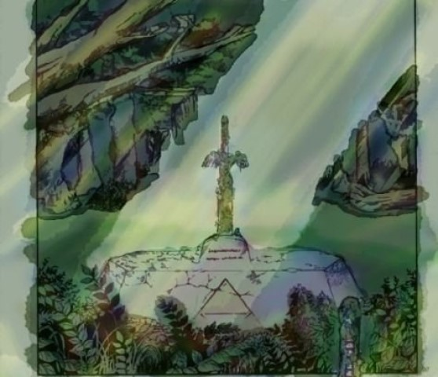
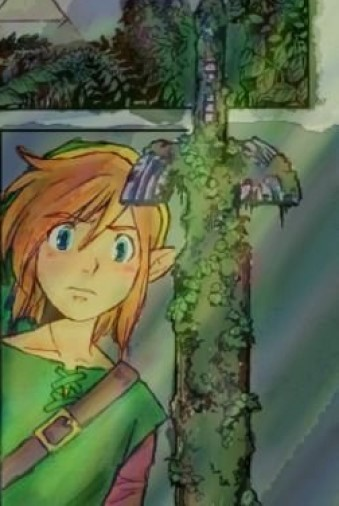
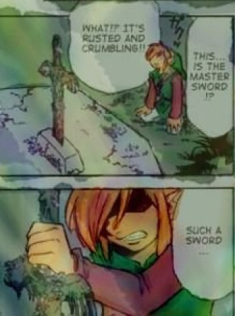

The Master Sword
  
Link
Link is the main protagonist of the Legend of Zelda series. He is the everlasting hero of the setting, having appeared throughout the ages in a neverending line of incarnations. The various heroes who use the name Link are courageous young boys or teenagers in green clothing who leave their homes to save the world from evil forces threatening it.
Over the course of his adventure, Link defeats legions of evil monsters, explores vast lands, helps anyone he meets who is struggling, navigates deadly dungeons, and collects mythical items while pursuing his quest for justice and peace. In the end, he succeeds in his quest and becomes a legendary hero. He is considered an iconic character in video gaming and the very symbol of the Zelda franchise, and remains one of the most popular video game protagonists.